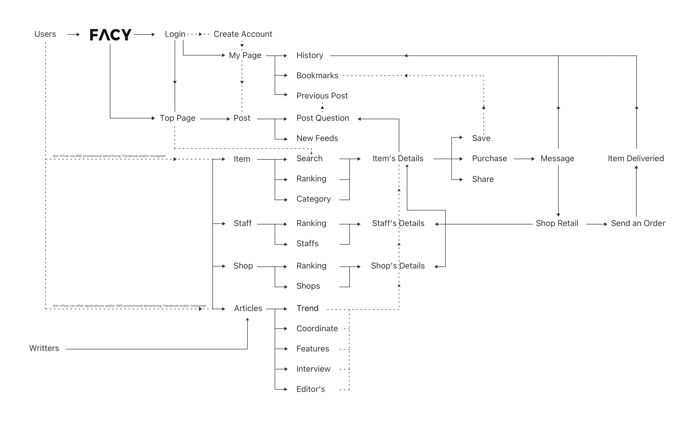
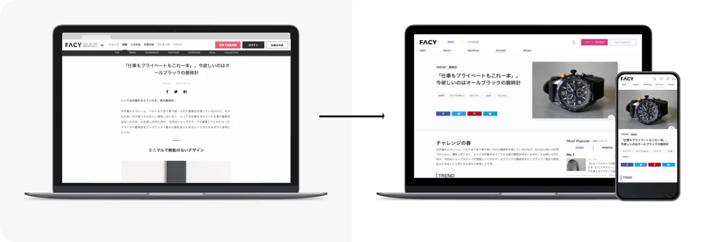
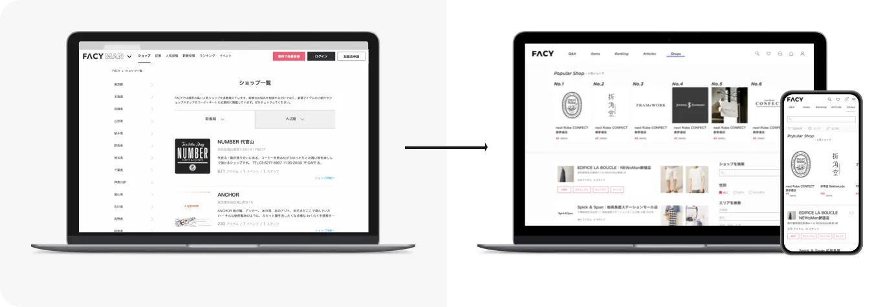
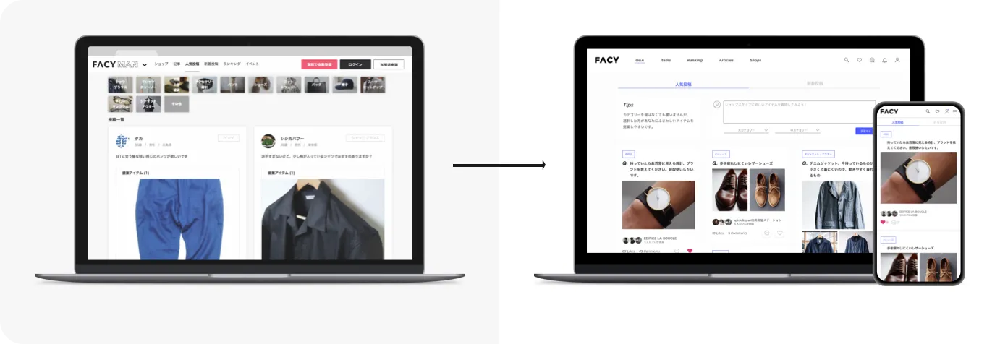
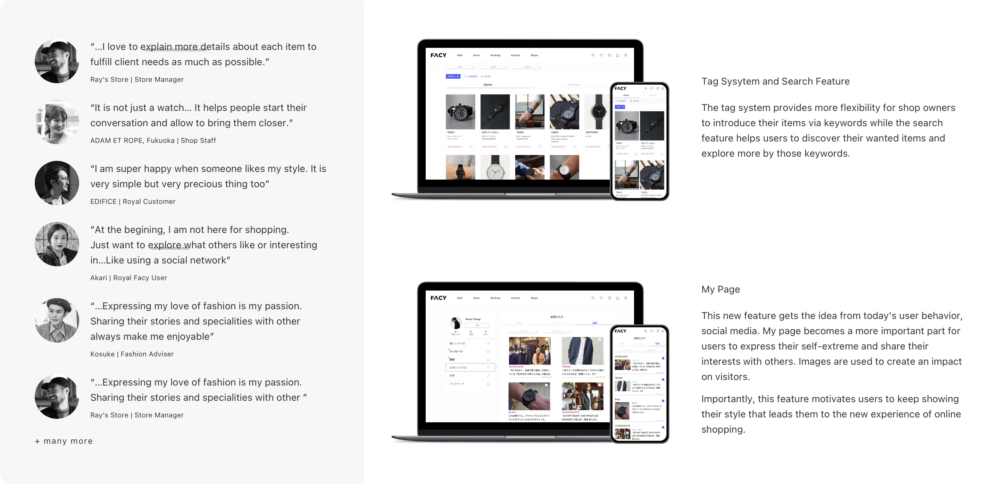
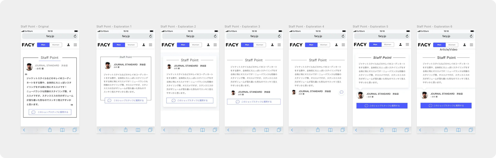
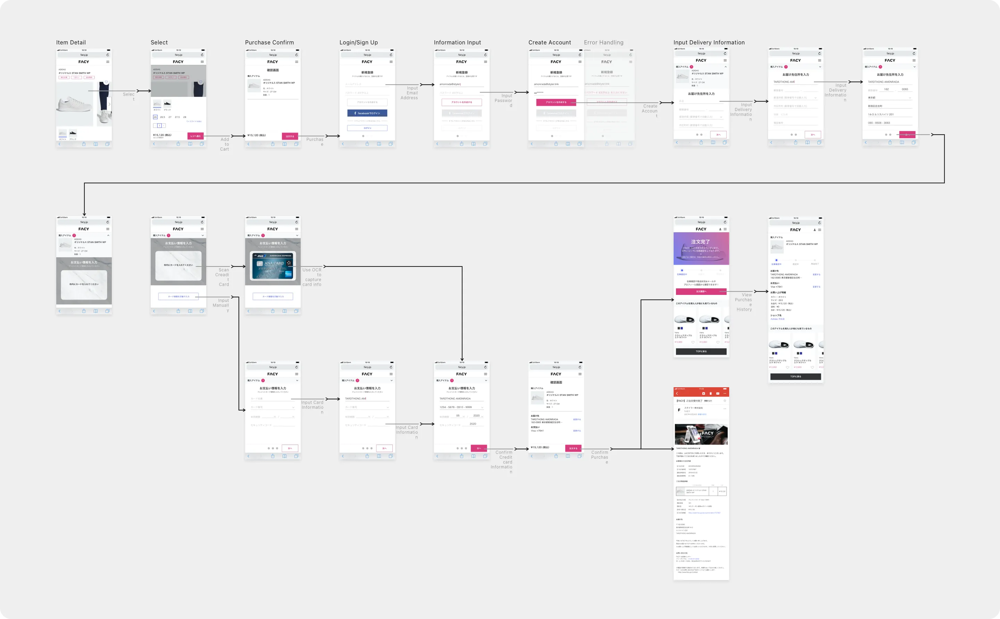
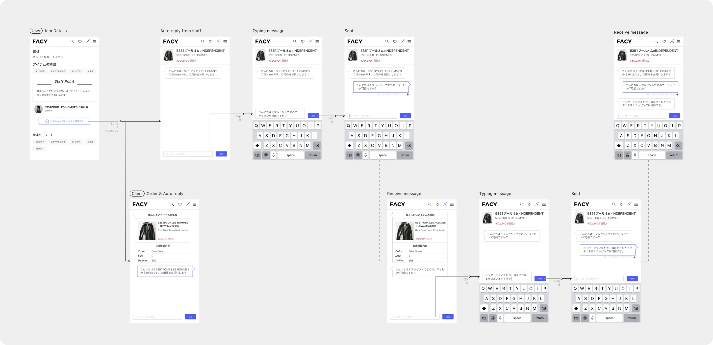
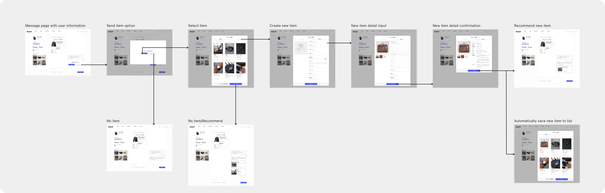
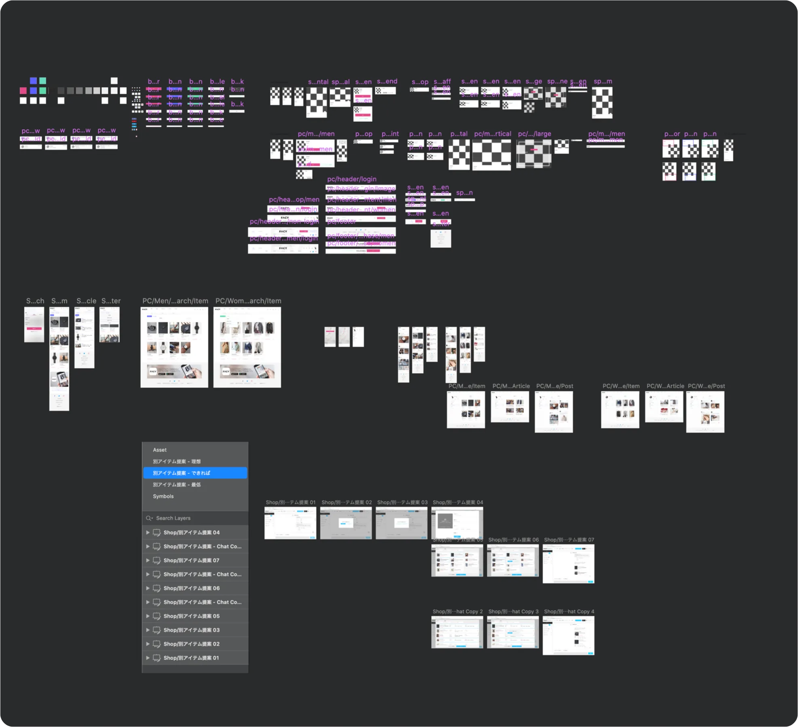

FACY.jp
Nobody buys a ¥40,000 dress from a platform that looks like a scam.
The Situation
FACY had a compelling idea: connect fashion-conscious users directly with shop staff who could recommend items, share styling advice, and build real relationships. Staff could write articles, answer questions, and recommend products — a social layer on top of e-commerce.
The problem: no designer had ever touched it. The platform was inconsistent, unbranded, and visually chaotic. The purchase flow was broken. The interface inspired zero trust. And in fashion e-commerce, trust is everything — nobody is spending ¥40,000 on a dress from a site that looks like it might not deliver.
The CEO messaged me on Wantedly, impressed by my portfolio work. Four months, solo, alongside my full-time role at Ogilvy.
The Insight
Trust was the product, not fashion
The clothes were real. The shops were real. The staff were passionate. But the interface didn't communicate any of that. Before I could improve conversion or engagement, I had to make FACY feel like a place worth spending money.
Users weren't just shopping — they were browsing like a social feed
I talked with 5–10 users — some in casual conversations walking around Shibuya near the office, others through scheduled store visits with loyal customers. One insight kept surfacing: people weren't coming to FACY with a purchase in mind. They were exploring, scrolling, discovering — the way you'd browse Instagram, not a store. One loyal user said she wasn't there to shop at first, just to see what others liked.
This reframed the entire design. The experience needed to reward browsing, not just buying.
Brand loyalty without the budget
Customers loved specific brands and shops. But they couldn't afford a premium item every month. The existing design only showed high-end pieces — which meant loyal customers visited, admired, and left. I saw an opportunity: surface smaller, affordable items from the same brands. Let customers maintain their relationship with a shop through a ¥3,000 accessory instead of losing them because the ¥40,000 jacket was out of reach this month.
The Work
Full Visual Redesign
Rebuilt every page — top, shop, article, post, search, My Page — with two principles: consistency and standard. Reduced the visual noise. Established a clear hierarchy. Made the platform feel branded, trustworthy, and worth spending money on.

Redesigned Key Pages

Article page — Used images to catch attention and drive reading. Added inline item detail boxes under product mentions so users could seamlessly access the item page. This directly connected editorial content to purchase.

Shop page — Added shop rankings at the top to create engagement for both users and shop owners. Displayed two popular items per shop in the listing view — users could judge a shop's style before clicking in, saving a step and making browsing more enjoyable.

Post page — Brought the post box to the top of the page (previously hidden behind an icon). Made it easier for users to ask questions, increasing conversation volume and making the platform feel alive.
New Features
Tag system and search — Gave shop owners flexibility to introduce items via keywords while giving users a real discovery tool. Previously there was no effective way to search or filter.
My Page — Redesigned as a social profile inspired by user behavior. Image-forward, expressive, designed to motivate users to share their style. Turned a utility page into a reason to keep coming back.

Staff point section — Multiple design explorations (six variations) to find the right balance between staff personality and brand consistency.

Checkout Flow with OCR
Redesigned the full purchase flow — from item detail through cart, login/signup, payment, and delivery. Integrated OCR credit card scanning to reduce friction on mobile. Designed error handling, account creation, and order confirmation states.

Admin Tools
Messaging system — Designed the admin messaging interface where shop staff could respond to user inquiries with personalized item recommendations. Each conversation thread showed the user's browsing history and saved items, giving staff context to make relevant suggestions rather than generic replies.

Tag customization tools — Built a flexible tagging interface so shop owners could manage their product taxonomy independently. Owners could create, edit, and organize tags by category, season, or trend — giving them control over how their items appeared in search and discovery without needing design or engineering support.

Design System
Built a component library and established visual standards — colors, typography, spacing, card styles — that gave FACY a consistent identity for the first time. Created reusable patterns that the development team could apply without design support.

"Nobody buys a ¥40,000 dress from a platform that looks like a scam."
The Impact
| Metric | Result |
|---|---|
| Engagement rate | +0.8% |
| Bounce rate | −20% |
| Revenue | Doubled |
The revenue lift came from multiple factors working together. Marketing ran strong promotions and articles. But the design changes played a clear role: the shop ranking feature drove competitive engagement from shop owners, and surfacing affordable items from premium brands gave loyal customers a reason to purchase — not just browse — every month. Combined with a trustworthy visual identity and a streamlined purchase flow, the platform finally converted the interest it had always generated.
The Lesson
Trust is designed. The same products, the same shops, the same staff — but wrapped in a consistent, branded, professional interface, suddenly users were willing to spend real money. Nothing changed about what FACY sold. Everything changed about how it felt.
Side projects reveal your ceiling. This was 4 months of solo work on top of a full-time agency job. The CEO found me, I scoped it, I shipped it. No manager. No team. No safety net. It was the moment I realized I could own a product end-to-end — and it set up everything that followed at Fidelity, Toranoko, and UMITRON.
Design for browsers, not just buyers. When your users behave like they're on a social feed, design for that behavior. Reward exploration. Make discovery feel good. The purchases follow.